Cos'è e dove vive
ODS Timer è una pagina web che si comporta come un'app. Si apre dal browser, si installa sulla schermata iniziale e da lì in poi funziona anche senza rete.
Non c'è account, non c'è registrazione, non c'è un server che tenga i tuoi dati: i timer, il catalogo degli esercizi, le impostazioni e lo storico stanno nella memoria del dispositivo che li ha scritti. Questo ha un lato buono e uno da ricordare: nessuno può vedere gli allenamenti della palestra, ma nemmeno tu li vedi da un secondo dispositivo finché non li mandi (§ 10) o non li copi (§ 11).
Installarla sul telefono o sul tablet
- Android / Chrome — apri l'indirizzo, menu ⋮ → Installa app (o Aggiungi a schermata Home).
- iPhone / iPad · Safari — apri l'indirizzo, tasto Condividi → Aggiungi alla schermata Home.
- Computer — funziona nel browser così com'è; su Chrome compare l'icona di installazione nella barra dell'indirizzo.
Installata, parte a tutto schermo senza la barra del browser — che in sala è mezzo centimetro di numeri in più — e la prima apertura mette in cache tutto il necessario: da lì funziona anche con il telefono in modalità aereo.
Anche questa guida è dentro l'app, in fondo alle impostazioni: si apre senza rete e vale per chiunque abbia l'indirizzo, senza dover mandare niente.
Al primo avvio l'app non è vuota: propone sei timer già pronti — Brucia grassi, EMOM 12 gambe, AMRAP del sabato, Circuito sala attrezzi, Core express, Benchmark mensile — e un catalogo di 52 esercizi diviso in sei categorie. Sono un punto di partenza da modificare, non una dotazione fissa: si cambiano e si cancellano tutti.
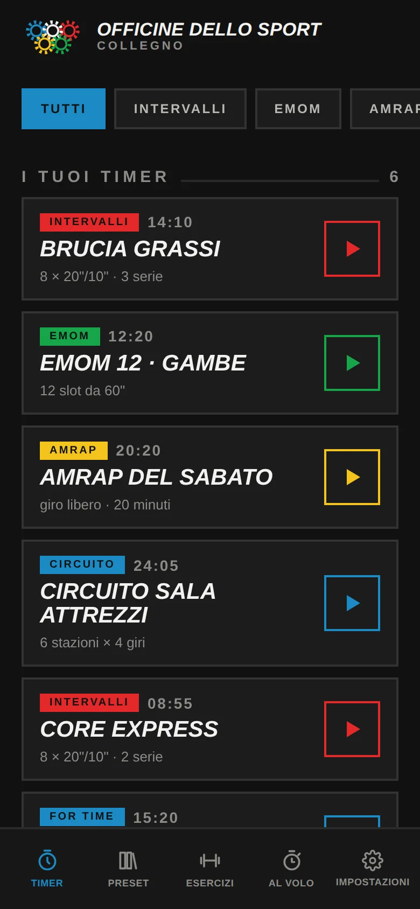
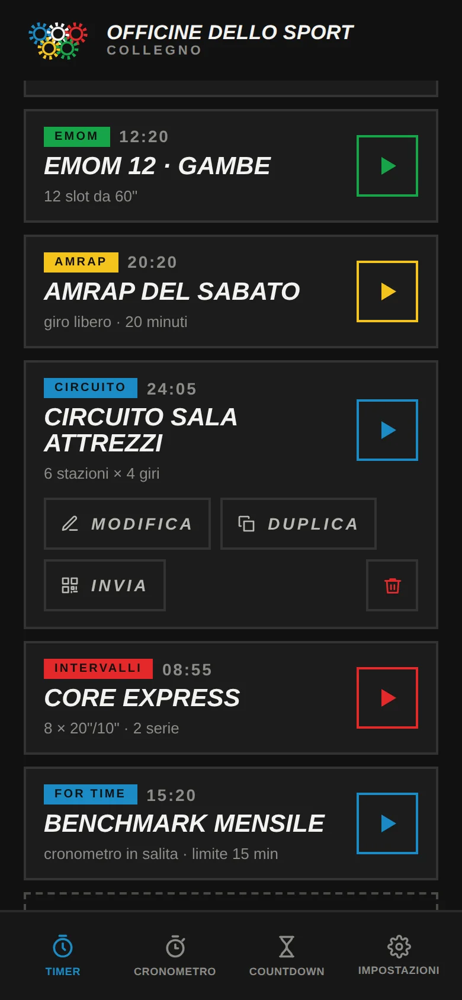
Le quattro schede
In fondo allo schermo (di lato, sul computer) ci sono quattro voci. Sono tutta la navigazione che l'app ha, e sono quattro perché in una lezione si entra solo lì.
| Scheda | A cosa serve |
|---|---|
| TIMER | I tuoi allenamenti. Da qui si avvia, si modifica, si duplica, si manda, si elimina. |
| CRONOMETRO | Conta in salita, con i centesimi e i giri. Per un randori, una navetta, un test. |
| COUNTDOWN | Sei durate che partono al tocco: un blocco di lavoro lungo quanto dici. |
| IMPOSTAZIONI | Maurizio, suoni, voce, schermo, libreria esercizi, copie di sicurezza, storico, versione, e questa guida. |
Le tre cose che non sono schede
Tre parti dell'app non stanno nella barra, di proposito: sono cose che si fanno una volta ogni tanto, non a lezione iniziata.
- Gli schemi (Tabata, HIIT, EMOM, AMRAP, For Time, Circuito) non sono una destinazione ma un punto di partenza: compaiono come prima schermata dopo + NUOVO TIMER, che è l'unico momento in cui servono.
- La libreria esercizi è la prima voce delle impostazioni: il catalogo si cura ogni tanto, non a ogni lezione.
- Lo storico è in fondo alle impostazioni. Continua a registrare ogni allenamento portato a termine e a viaggiare nelle copie di sicurezza, ma non occupa un posto in barra.
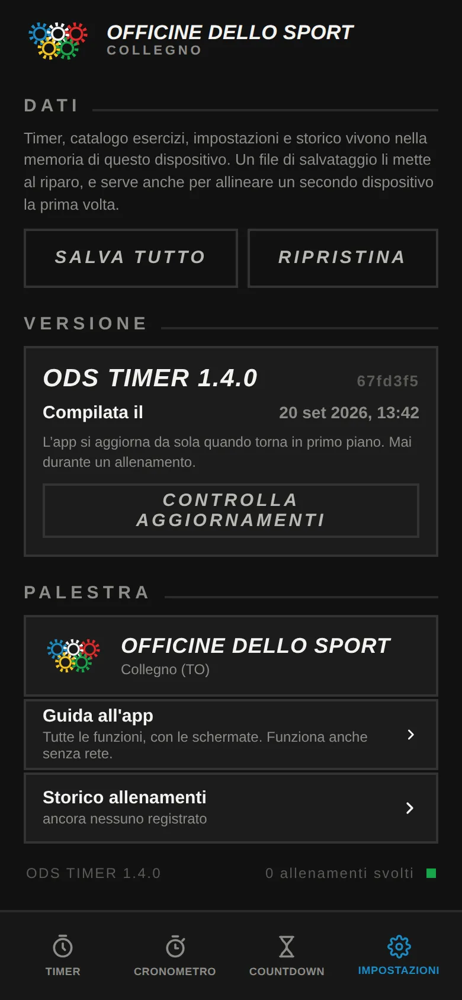
Cronometro e countdown
Due schede della barra, una per attrezzo. Non chiedono di costruire un allenamento: si usano a lezione iniziata, con venti persone ferme che aspettano, e lì nessuno si mette a compilare un editor.
Countdown
Sei durate — 30″, 45″, 1′, 1′30, 2′, 3′ — che partono al tocco. È un solo blocco di lavoro della durata che scegli: non un recupero, ma il pezzo di lezione che dura tanto quanto hai detto. La risposta a «novanta secondi di plank», che prima costringeva a creare e salvare un timer apposta.
- La freccia in alto a sinistra torna alle durate senza chiudere niente: si cambia idea a conto già iniziato, perché la sala risponde meglio o peggio del previsto.
- C'è il +30″ del timer grande, e RIFAI per ripartire da capo.
- Mentre gira la cornice è rossa, come il lavoro del timer degli allenamenti, e la scritta dice LAVORO. Allo zero passa al verde — il verde con cui l'app dice «finito» — con la scritta TEMPO e il segnale di fine: si vede da tutta la sala anche senza sentire niente.
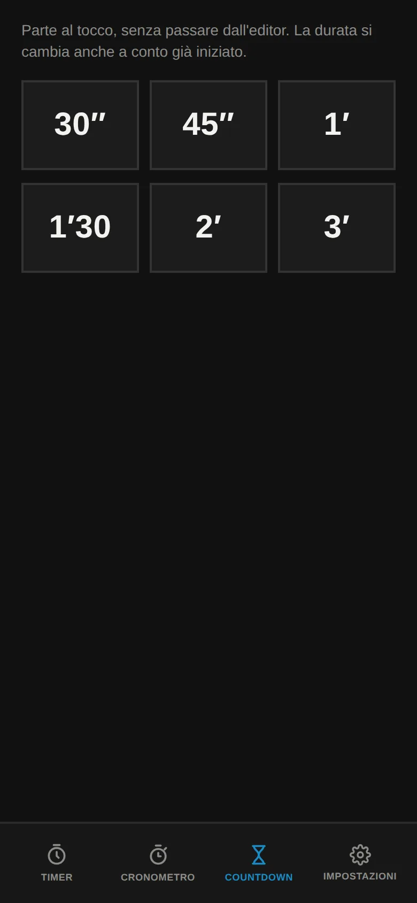
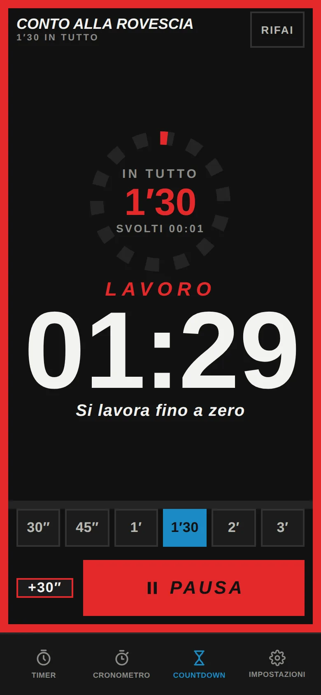
Il cronometro
Conta in salita con i centesimi e segna i giri. I minuti restano della misura delle cifre del timer e i centesimi stanno accanto, un terzo: da lontano si legge il minuto, in mano il centesimo.
GIRO segna il tempo di adesso. Ogni riga mostra lo scarto di quel giro e il totale, con il più veloce in verde — che è quello che serve quando si fanno le navette o si cronometra un randori. AZZERA cancella tempo e giri.
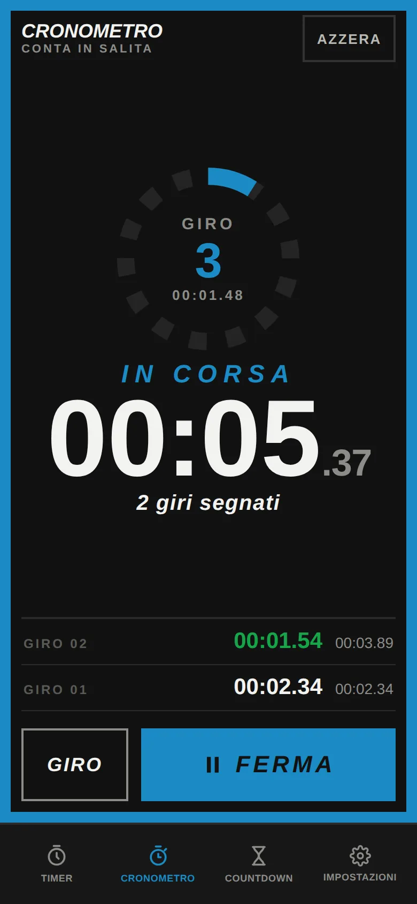
Tutti e due non si fermano quando guardi un'altra scheda. Avvii un minuto e mezzo, passi ai timer per controllare il prossimo blocco, e il conto continua: quando scade suona anche se in quel momento sei altrove. È il motivo per cui lo avvii.
E il tempo arriva sempre dall'orologio, mai da un contatore aumentato a ogni battito: la stessa regola del timer degli allenamenti, perché un telefono che mette in pausa la pagina non faccia restare indietro il conto.
I cinque schemi
Ogni timer segue uno dei cinque schemi. Lo schema decide quali parametri contano davvero: l'editor mostra solo quelli, invece di farti compilare campi che il tuo allenamento ignora.
| Schema | Come funziona | Cosa imposti |
|---|---|---|
| INTERVALLI | Lavoro e recupero che si alternano per il numero di round scelto. È il Tabata, è l'HIIT. | Preparazione, lavoro, recupero, round, serie, riposo serie, defaticamento |
| CIRCUITO | Stazioni in sequenza, ripetute a giri. La durata la porta ogni stazione, non lo schema: il vogatore può durare 60″ e gli addominali 30″. | Preparazione, recupero (il cambio stazione), giri, serie, riposo serie, defaticamento |
| EMOM | Blocchi di lavoro attaccati, senza recupero in mezzo: il recupero è quello che ti avanza dentro il blocco quando finisci prima. Metti lavoro a 60″ e hai l'EMOM classico. | Preparazione, lavoro, round, serie, riposo serie, defaticamento |
| AMRAP | Un unico conto alla rovescia: più giri possibili nel tempo dato. Gli esercizi elencati compaiono insieme, come lista del giro. | Preparazione, durata, serie, riposo serie, defaticamento |
| FOR TIME | Cronometro che sale invece di scendere, con un tempo limite oltre cui si ferma. Serve a misurare quanto ci metti, non a scandire. | Preparazione, durata (il limite), defaticamento |
Come viene srotolato l'allenamento
Qualunque schema, all'avvio l'app trasforma il tuo timer in una lista piatta di intervalli, uno dopo l'altro: preparazione, poi i giri, l'eventuale riposo fra una serie e l'altra, il defaticamento in fondo. Da lì in poi il timer non fa che scorrerla. È il motivo per cui la barra di avanzamento e il tempo totale sono sempre esatti, anche quando Maurizio ci mette del suo.
Gli intervalli senza un esercizio associato prendono un nome loro: Mettiti in posizione nella preparazione, Respira nei recuperi a intervalli, Cambio stazione nei circuiti, Fine serie 1 di 3 nel riposo fra serie, Allunga e respira nel defaticamento.
Costruire un timer
Dalla scheda TIMER, + NUOVO TIMER apre prima la scelta dello schema — Tabata, HIIT 40/20, EMOM, AMRAP, For Time, Circuito, ognuno con il suo disegnino — e poi l'editor con i valori già dentro. MODIFICA su una scheda apre direttamente l'editor. Lo schema si sceglie lì e dentro l'editor si legge soltanto: era un bivio offerto due volte, e la seconda volta non serviva a nessuno.
I parametri, con i loro limiti
Ogni parametro si tocca con i due tasti − e +, a passi fissi, e ha un tetto: sono gli stessi limiti che valgono per un timer ricevuto con un QR o ripristinato da un file, così un allenamento assurdo non può esistere in nessun modo.
| Parametro | Da | A | Passo | Cosa comanda |
|---|---|---|---|---|
| PREPARAZIONE | 0 s | 120 s | 5 s | Il tempo per mettersi in posizione. Di partenza 20 secondi per tutti gli schemi. |
| LAVORO | 5 s | 600 s | 5 s | Quanto dura un intervallo di lavoro. Nel circuito lo sovrascrive la durata della singola stazione. |
| RECUPERO | 0 s | 600 s | 5 s | Fra un lavoro e il successivo. A zero sparisce del tutto. |
| ROUND | 1 | 99 | 1 | Quanti giri dentro una serie. |
| SERIE | 1 | 20 | 1 | Quante volte si ripete tutto il blocco dei round. |
| RIPOSO SERIE | 0 s | 600 s | 15 s | La pausa lunga fra una serie e l'altra. |
| DEFATICAMENTO | 0 s | 900 s | 15 s | Un blocco finale di scarico. A zero non compare. |
| DURATA | 1 min | 90 min | 1 min | Solo AMRAP e For Time: il tempo del blocco unico. |
Gli esercizi
Sotto i parametri c'è l'elenco degli esercizi. Si aggiungono scrivendoli a mano o pescandoli dal catalogo con la ricerca — che ignora accenti e maiuscole, quindi mobilita anche trova Mobilità anche — e si possono scegliere in blocco. Ogni riga ha due frecce per spostarla su e giù: spente quando è già in cima o in fondo, invece di non fare niente.
Nel circuito ogni riga porta anche la sua durata (da 5″ a 600″): è così che una stazione può durare più delle altre. Negli altri schemi gli esercizi si distribuiscono sui round in ordine, ripartendo da capo quando finiscono.
L'obiettivo: serie, ripetizioni, carico
Aprendo una riga si possono scrivere serie (fino a 20), ripetizioni (fino a 200) e carico
(fino a 500 kg, a mezzi chili). Durante il lavoro compaiono sotto il nome dell'esercizio in una
riga sola: 3×10 · 16 kg. Le parti che mancano spariscono invece di comparire a zero, quindi
anche solo 10 rip. o 16 kg sono scritture valide.
È un promemoria, non un parametro. A scandire il tempo restano durate e round: scrivere 3×10 non allunga l'intervallo, non cambia la durata totale e la voce non lo legge. Serve a chi guarda lo schermo per sapere cosa farci dentro, in quel minuto.
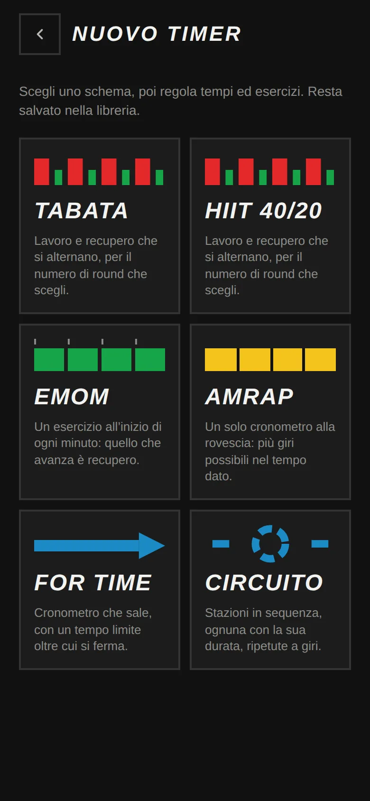
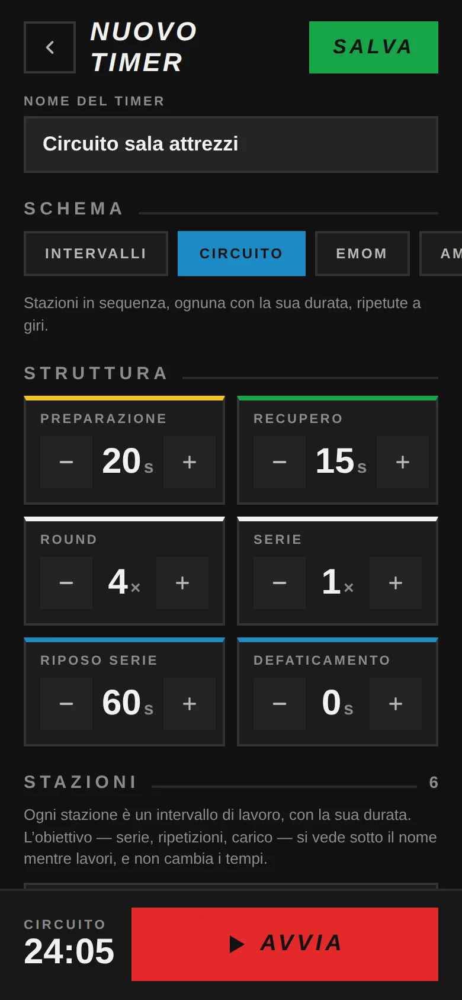
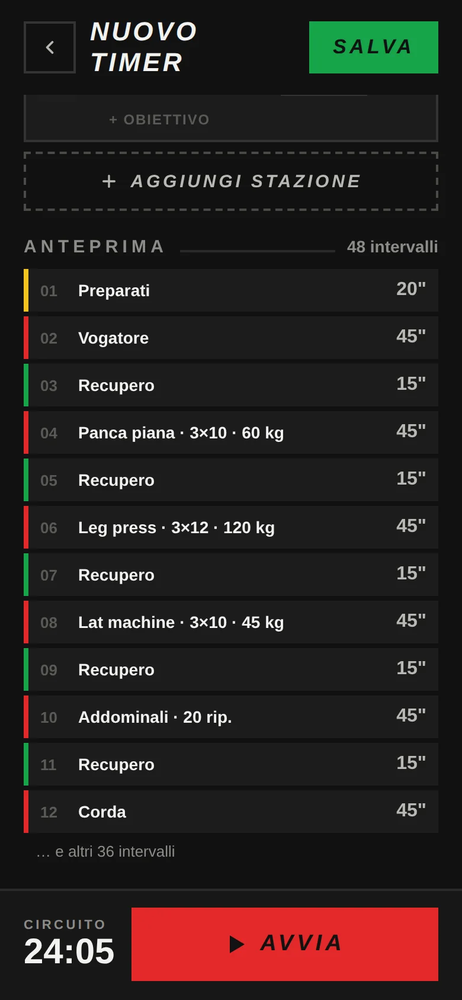
La libreria esercizi
IMPOSTAZIONI → Libreria esercizi: l'elenco della palestra si cura lì, una volta, invece di rincorrerlo mentre si scrive un timer.
Gli esercizi sono raggruppati in sei categorie — Judo, A corpo libero, Attrezzi, Core, Cardio, Mobilità — con ricerca e filtro per categoria. Ogni riga dice due cose utili: in quanti timer quell'esercizio è usato, e se ha già una clip di voce incisa.
Rinominare rinomina ovunque
Se cambi il nome di un esercizio, cambia anche dentro i timer che lo usano. Un esercizio è una cosa sola, non una stringa copiata in giro. Il confronto ignora maiuscole e accenti, quindi funziona anche dove il nome era stato scritto diversamente.
Sostituire il catalogo di prova con quello vero
I 52 esercizi di partenza sono scritti a occhio. Per mettere quelli veri della palestra: SVUOTA, poi INCOLLA UN ELENCO e incolli i nomi — uno per riga o separati da virgola. L'app toglie da sola trattini e numerazioni all'inizio delle righe e salta i doppioni, dicendoti quanti ne ha aggiunti e quanti ne ha saltati. RIPRISTINA rimette l'elenco di partenza; un catalogo lasciato vuoto resta vuoto anche dopo un ricarica, perché è una scelta e non un errore.
Perché il catalogo esiste davvero. Non è per risparmiare digitazione: la clip della voce di un esercizio si chiama come il suo nome. Con i nomi scritti a mano sarebbero infiniti e impossibili da incidere; con un catalogo diventano un elenco finito, e il registratore li elenca tutti.
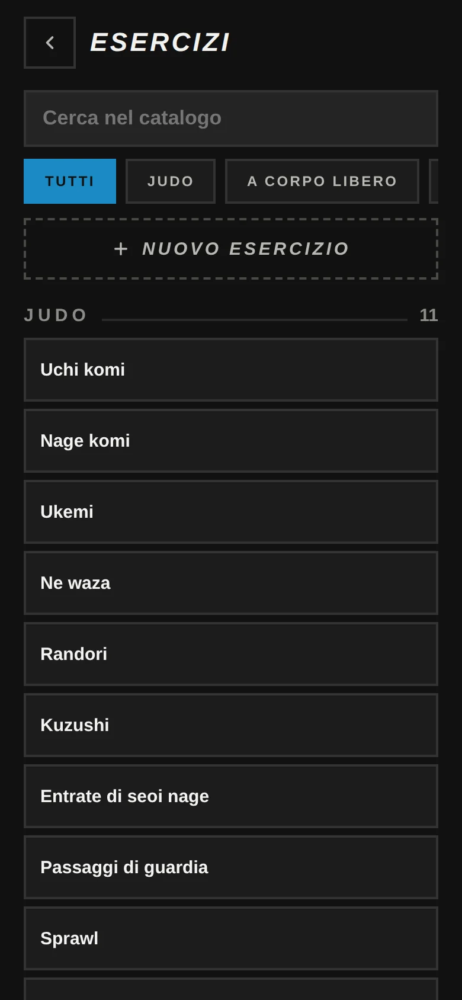
Durante la lezione
Toccando ▶ su un timer si apre la schermata dell'allenamento. Da lì in poi lo schermo dice una cosa per volta.
Il colore è l'informazione
Il bordo dello schermo prende il colore dello stato: da dieci metri si capisce a che punto è l'allenamento senza leggere i numeri. Sono i cinque colori del marchio della palestra.
Cosa c'è sullo schermo
- In alto: il nome dell'allenamento, la struttura o la serie in corso, e i quadratini dei round — pieno quello attuale, spenti quelli passati.
- L'anello: il giro a cui sei (2/8) e quanto manca alla fine di tutto l'allenamento.
- Le cifre: il tempo dell'intervallo in corso. In For Time salgono invece di scendere.
- Sotto: il nome dell'esercizio e, se l'hai scritto, l'obiettivo.
- La riga PROSSIMO: cosa arriva dopo e quanto dura. Sparisce in modalità schermo grande.
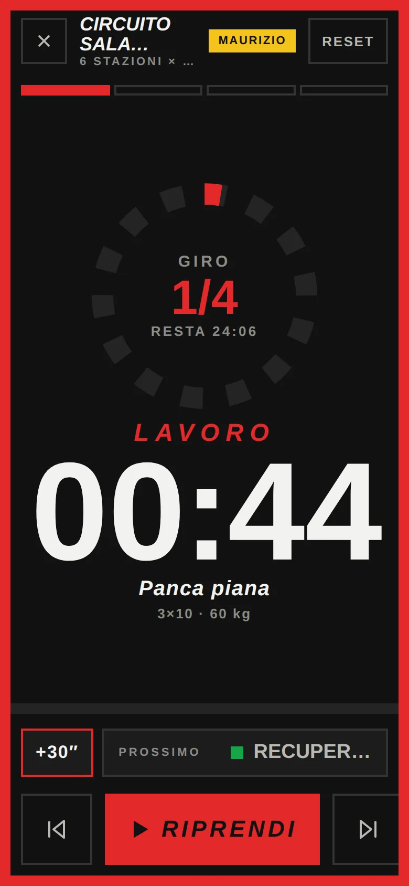
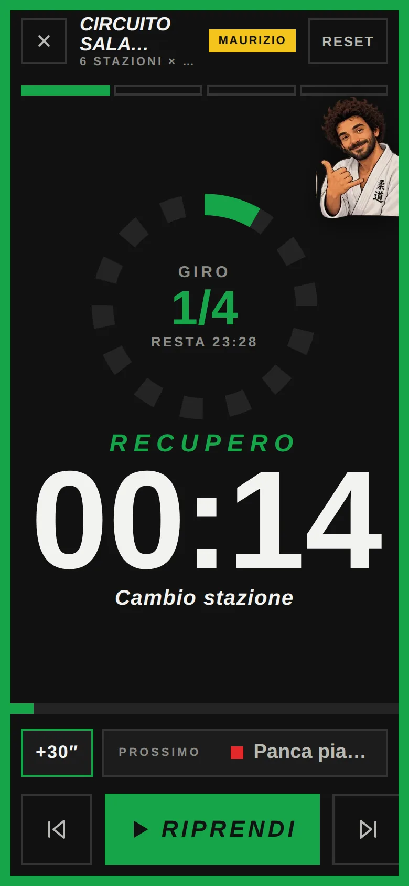
I comandi
| Comando | Cosa fa |
|---|---|
| +30″ | Allunga l'intervallo in corso di trenta secondi e sposta in avanti tutto il resto: barra e durata totale restano coerenti. Vale sul lavoro come sul recupero. Serve quando il gruppo è cotto, una postazione è occupata o arrivano due in ritardo. |
| ⏮ ⏭ | Intervallo precedente e successivo, per saltare o rifare un blocco. |
| AVVIA / PAUSA | La pausa ferma tutto, tempo totale compreso. |
| RESET | Riporta l'allenamento all'inizio. |
| ✕ | Esce e torna all'elenco. |
Se l'app si chiude a metà
Una telefonata, uno swipe di troppo, il tablet che si addormenta, la batteria. Ogni due secondi l'app segna dove sei arrivato: alla riapertura, in cima alla scheda TIMER, trovi «allenamento interrotto — giro 4 di 8, 03:20 svolti» con RIPRENDI e SCARTA.
- Si riprende in pausa, non in corsa: chi riprende vuole prima dire «ci siamo?».
- La ripresa vale sei ore e compare solo se avevi svolto almeno 15 secondi.
- Uscire dal timer, azzerarlo o finirlo la cancella: interrotto vuol dire interrotto, non chiuso.
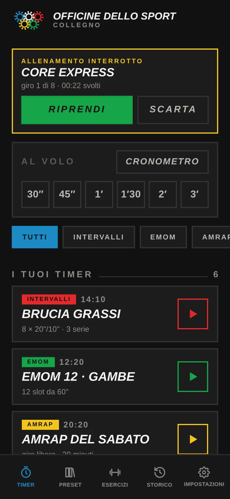
Il cronometro non va indietro. Il tempo è sempre ricavato dall'orologio di sistema, mai accumulato un pezzo alla volta: se il telefono mette in pausa la pagina — schermo spento, altra app in primo piano — al ritorno il timer si riallinea da solo invece di restare indietro di quanto è stato fermo.
Modalità Maurizio
L'allenatore che «perde il conto» per farti lavorare qualche secondo in più. È accesa di partenza al livello classico, e si regola dalla scheda in cima alle impostazioni.
| Livello | Intervalli toccati | Esitazioni | Secondi per esitazione | Giro in più |
|---|---|---|---|---|
| SPENTA | — | — | — | — |
| DISTRATTO | 30 % | 1 | 1–2 s | 12 % |
| CLASSICO | 55 % | 1–2 | 1–3 s | 25 % |
| SPIETATO | 85 % | 1–3 | 2–4 s | 50 % |
Come si accorge che sbaglia
Il numero sullo schermo si inceppa su una cifra, oppure torna indietro e riscende — «dodici… tredici? dodici… undici» — mentre compare l'illustrazione di Maurizio con una delle sue frasi: «Ho perso il conto, ricominciamo», «No aspetta, tre», «Eh no, quello non valeva». Il tempo in più è vero: l'intervallo dura davvero di più.
Due regole tengono lo scherzo dalla parte giusta del confine: lo stesso numero non resta fermo più di due secondi — un numero bloccato a lungo sembra un'app rotta, non una gag — e i bip e la voce seguono il numero mostrato, non quello vero, altrimenti si sentirebbe il trucco.
Il giro in più
Quando l'allenamento sarebbe finito, ogni tanto se ne inventa un altro: una copia dell'ultimo intervallo di lavoro, annunciata con ANCORA UNO e una frase sua. Il contatore dei giri non avanza, esattamente come chi sostiene che quello di prima non contava. E non compare nella riga PROSSIMO: letto in anticipo non sarebbe più uno scherzo.
- Sul recupero: lì conta benissimo.
- Sugli intervalli sotto i 10 secondi: troppo corti per reggere un ripensamento credibile.
- Su AMRAP e For Time: sono un blocco unico lunghissimo, e raddoppiarlo non è uno scherzo, è un altro allenamento.
- Il giro in più chiede anche un ultimo blocco fra i 5 e i 180 secondi, e almeno due blocchi di lavoro.
Le illustrazioni sono diciotto, tutte di Maurizio. Al centro con la frase quando perde il conto o si inventa un giro, una a fine allenamento, e piccole in un angolo sugli stati fermi — preparazione, recupero, riposo, defaticamento. Durante il lavoro nessuna, di proposito: sotto sforzo lo schermo deve dire solo il tempo.
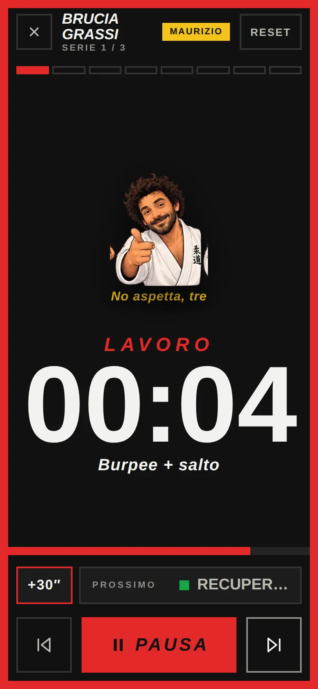
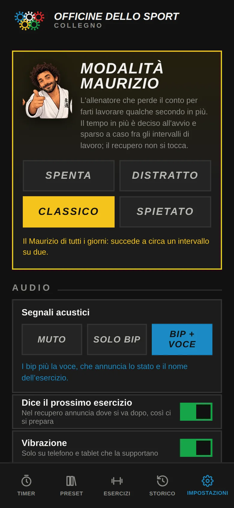
Suoni e voce
Un interruttore a tre posizioni
In IMPOSTAZIONI → AUDIO, Segnali acustici ha tre posizioni che si escludono:
| Posizione | Cosa senti |
|---|---|
| MUTO | Niente. Restano il colore dello schermo, la barra e la vibrazione — in una sala con la musica alta è spesso l'unica cosa che si vede davvero. |
| SOLO BIP | Tre bip sugli ultimi tre secondi di ogni intervallo, e uno più lungo al cambio. |
| BIP + VOCE | I bip più la voce, che annuncia lo stato e il nome dell'esercizio. |
Accanto ci sono il volume dei segnali (0–100 %, con un suono di prova mentre lo muovi) e la vibrazione, che è indipendente dal suono e funziona solo dove il dispositivo la supporta.
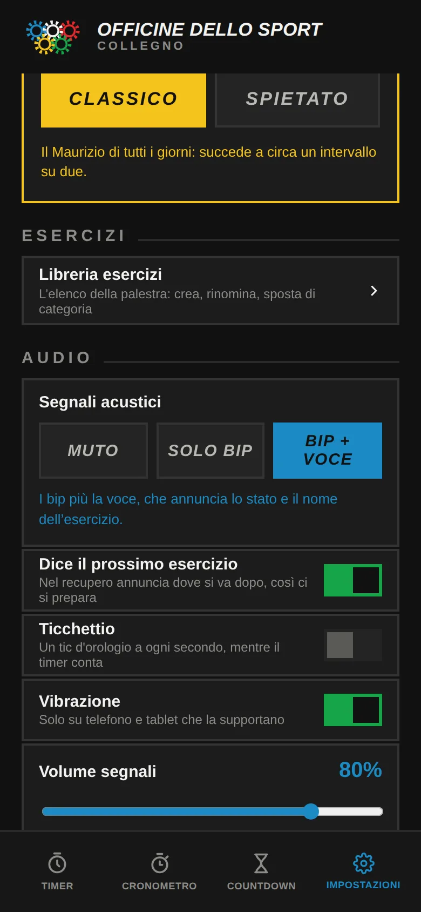
«Prossimo: burpee»
Con la voce accesa compare anche Dice il prossimo esercizio: nel recupero la voce aggiunge dove si va dopo — «recupero. Prossimo: burpee». In un circuito a otto stazioni è l'unico momento in cui ci si può preparare alla prossima. Senza la voce l'opzione sparisce, perché non avrebbe niente da dire.
La voce incisa
Al posto della sintesi del telefono l'app può usare clip registrate con una voce vera. Oggi ce ne sono 15: il saluto d'apertura, i cinque stati, i tre numeri del conto alla rovescia e le sei battute di Maurizio. Ne mancano quattro — «prossimo» e le tre frasi del giro in più — e dove la clip manca il timer torna da solo alla voce di sistema, senza saltare l'annuncio.
Per registrarle: IMPOSTAZIONI → VOCE INCISA → INCIDI LA VOCE. Il registratore
elenca tutte le frasi, più un nome per ogni esercizio del catalogo; si incide un pezzo per
volta, si riascolta e si rifà. ESPORTA scarica voce-ods.zip, da
scompattare dentro public/voce/ del progetto perché le clip valgano per tutti i dispositivi e
non solo per quello su cui hai registrato.
Un annuncio non aspetta mai. Se la clip non è già pronta in memoria, parla la sintesi subito invece di aspettare il download: un annuncio che arriva a momento passato è peggio di un annuncio meno bello. Per lo stesso motivo le clip si scaldano all'apertura dell'app, non del timer.
L'audio si sblocca al primo tocco. I browser non lasciano suonare niente finché non tocchi lo schermo: l'app se ne approfitta al primo tocco ovunque, così il primo annuncio dell'allenamento non si perde.
Schermo
- Schermo sempre acceso — durante l'allenamento impedisce al dispositivo di spegnersi, finché la batteria lo consente.
- Modalità schermo grande — pensata per il tablet appeso in sala, che si guarda da dieci metri: la riga PROSSIMO sparisce, l'anello si stringe, i margini si riducono e tutto quello spazio va alle cifre (su un 1280×800 crescono del 45 %). Su un telefono in verticale le proporzioni si adattano da sole; su un telefono girato di lato la modalità torna alle misure normali, perché lì spazio da regalare non ce n'è.
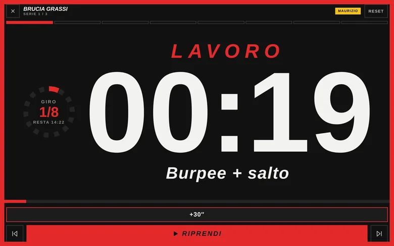
Mandare un timer
Dalla scheda di un timer, INVIA mostra un QR code. Il tablet lo inquadra con la fotocamera di sistema — nessuna app da installare — e si apre con quell'allenamento pronto: da avviare subito o da salvare fra i suoi. Sotto c'è anche il link, per chi preferisce WhatsApp.
L'allenamento sta dentro il link, non su un server: compresso, un timer normale occupa 258
caratteri e il caso peggiore — venti stazioni con nomi lunghi e obiettivi — poco più di 300, mentre
un QR ne regge quasi tremila. I dati stanno dopo il #, e quella parte dell'indirizzo il browser
non la manda mai a nessuno.
Due conseguenze pratiche: gli allenamenti della palestra non passano da nessuna parte, e il tablet riceve il timer anche senza rete, purché abbia già l'app in cache.
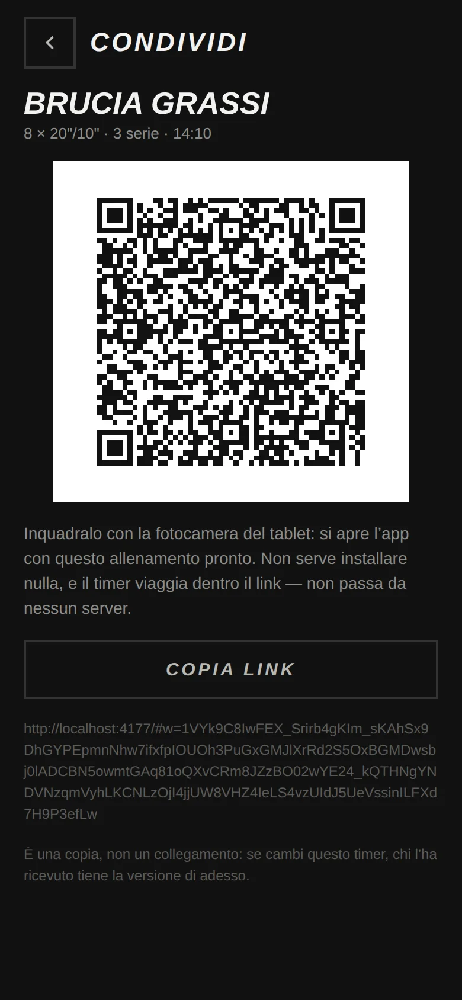
È una copia, non una sincronizzazione. Chi riceve si ritrova il timer com'era al momento della scansione. Se dopo lo modifichi sul tuo telefono, sul tablet resta la versione vecchia: va rimandato.
Salvare e ripristinare
IMPOSTAZIONI → DATI. SALVA TUTTO produce un file
ods-timer-2026-09-14.json — una decina di kilobyte per una palestra avviata — con dentro
timer, catalogo esercizi, impostazioni e storico. RIPRISTINA lo rilegge.
Serve per due cose. La prima è non perdere tutto: basta pulire i dati del sito, cambiare telefono o romperlo, e sparisce anche il catalogo della palestra, che è la cosa che costa più tempo a mettere insieme. La seconda è allineare un secondo dispositivo la prima volta: si salva dal telefono e si ripristina sul tablet.
Il ripristino sostituisce, non fonde. Due elenchi mescolati sono un terzo elenco che non è né l'uno né l'altro. Prima di procedere l'app ti mostra cosa c'è nel file e cosa verrebbe sostituito — «7 timer, 53 esercizi» contro «6 timer e 0 esercizi» — perché è l'unica operazione da cui non si torna indietro.
Su un'app installata dal telefono il salvataggio passa dal foglio di condivisione, che è la strada che porta davvero a «Salva su File»; sul computer resta un normale download.
Aggiornamenti
L'app si aggiorna da sola: controlla quando torna in primo piano e una volta l'ora, e passa alla versione nuova senza chiedere niente — tranne mentre un timer è aperto. Un aggiornamento a metà lezione è peggio di un aggiornamento in ritardo, quindi aspetta che tu esca.
In fondo alle impostazioni, la sezione VERSIONE dice esattamente quale copia hai in mano: il numero di versione, il codice della compilazione scritto in piccolo di fianco, e la data. Servono quando una cosa si prova sul telefono e ci si chiede se è già arrivata sul tablet: se i due numeri coincidono, è la stessa app. Sotto c'è CONTROLLA AGGIORNAMENTI, per quando serve una risposta subito — tipicamente sul tablet in sala, che resta acceso per giorni.
Quello che non fa
- Non sincronizza. Il QR manda un timer, il file di salvataggio porta tutto il resto, ma restano copie. Per una libreria che si allinea da sola fra telefono e tablet servirebbe un server, ed è l'unica cosa qui dentro che non si può fare senza.
- Non conta le ripetizioni. Serie, ripetizioni e carico sono un promemoria scritto da te; l'app non li verifica e non li somma.
- Non conta i giri dell'AMRAP. Il cronometro scende e basta: quanti giri hai chiuso lo sai tu.
- Il catalogo di partenza è scritto a occhio e va sostituito con quello vero della palestra (§ 5).
- Mancano le clip dei nomi degli esercizi, più «prossimo» e le tre frasi del giro in più: finché non ci sono, quelle parti le dice la voce di sistema.
L'app è online su nalbertini.github.io/Timer- e si aggiorna a ogni modifica.